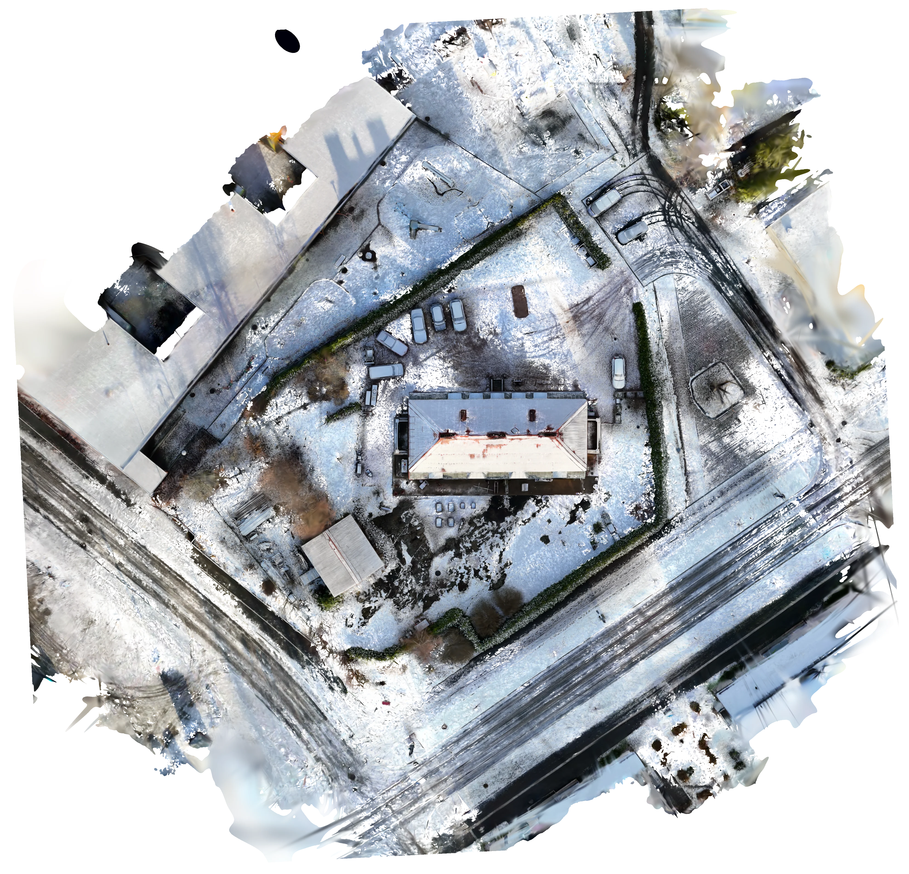
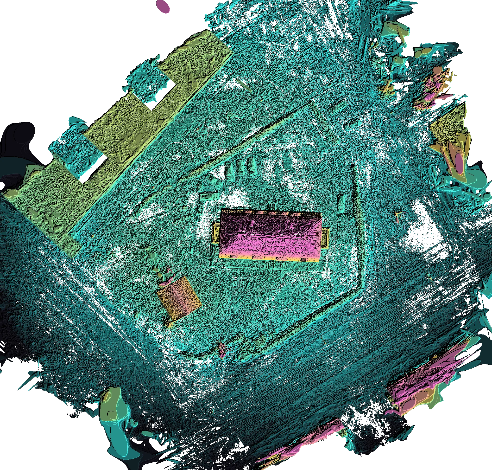

Pipeline steps
Each step reads the scene folder, stages its work in .gausser/tmp/, and replaces its
output only after it succeeded. Run them one by one (gausser STEP) or let gausser run
run every step that is missing or out of date.
gausser run
Runs frames (with --video), mask
(with --prompt), solve, dense (with --dense),
train, lod (--lod), mesh (--mesh,
implies --dense) and map (--map), in that order. Every step's options are accepted.
- A step is skipped when its output is up to date (rules on Scene and state). Once one step runs, every later step runs too.
--from STEPredoes that step and everything after it, e.g.gausser run --from solve --matcher sequential.--importfirst moves photos lying in the scene folder intoimages/.- If COLMAP places fewer than half the images,
solveraises andrunstops before a wasted training run. - Without
--prompt, no new masks are made but existing masks are still used;--no-masksignores them.
gausser run continues
where it stopped, because finished outputs are files that are up to date.gausser frames SOURCE
Picks the frames to train on. SOURCE is a video, a folder of videos, a folder of photos (copied whole),
a QooCam 8K .MOV or photo folder, or an iPhone LiDAR scan folder. A folder's videos include those in its subfolders. Output: images/ plus
frames.json (every pick with its time, motion and sharpness score).
How it chooses
- Analysis pass. ffmpeg decodes the video once to grey 1280 px frames. Each frame gets a focus score (variance of the Laplacian) and OpenCV DIS optical flow tracks a point grid.
- Motion ladder. Ten displacement thresholds are tracked at once. Each threshold cuts the video into windows where the camera has moved that far; the sharpest frame of each window is the pick.
- Level.
--spacing low|medium|highpicks a starting level; the level moves finer or coarser until the count lies between--min-frames(150) and--max-frames(600). Still stretches still give a frame every 3 s. - Extraction pass. ffmpeg writes only the picked frames at full size, with the same input options so frame numbers match (a test checks this against pixel content).
Options: --range 1.5-32.5 (repeatable, seconds or m:ss) keeps parts of one video; --every N
takes the sharpest of every N frames instead; --overlap 80 is for straight-down drone video: a frame
whenever the next would share only 80% of the view, without frame-count limits. HDR (HLG/PQ) video is mapped to SDR.

--overlap 80 (drone mapping report).360°, QooCam, LiDAR and drone sources add their own outputs (panos/, arkit/, GPS in EXIF):
see Capture types. New frames delete everything built from the old ones.
gausser mask PROMPT
SAM3 finds the prompted subject in every image and writes two mask sets: masks/<stem>.png for
Brush (white = train) and colmap/masks/<name><ext>.png for COLMAP (the double extension is required).
| option | use it when |
|---|---|
--threshold 0.3 | many images report no hit (default 0.5) |
--all-instances | the prompt has several instances and all should stay |
--miss drop | a whole-image fallback would train people, water or sky into the subject; missed images get a black Brush mask (ignored) and a white COLMAP mask (still registered) |
--dilation N / --feather N | grow (or with negative N, shrink) or blur the Brush masks; -2 drops edge pixels mixed with background |
--exclude | masking people or a 360° operator: writes only masks-exclude/ (black = every instance), for train --exclude-masks; see Leaving people out |
New subject masks delete the COLMAP model and dense/, since COLMAP's features depend on them, unless
the model was solved with --no-masks. SAM3 runs on MPS with PYTORCH_ENABLE_MPS_FALLBACK=1;
gausser sets it.
gausser solve
COLMAP structure-from-motion: feature_extractor (one camera per source video in frames.json, else one shared camera; the image list, masks),
a matcher, then the mapper. Separate cameras matter when several phones or lenses filmed one subject. The largest model becomes sparse/0; database.db records which images it used.
| --matcher | chosen by auto when | notes |
|---|---|---|
spatial | most images have GPS (drone) | pairs images with their GPS neighbours; the global mapper (GLOMAP) is used |
exhaustive | ≤ 200 images | every pair; hours on 500+ images |
sequential | > 200 images | neighbours in order plus vocabulary-tree loop detection |
vocab_tree | never | large unordered photo sets |
After mapping, solve moves the model when it knows better: 360° models are levelled (gravity +y),
iPhone scans are snapped to ARKit (metres), and drone models are georeferenced into EPSG:3067 or UTM
(sparse/geo.json). The mapper writes about 20 snapshots, which the monitor
shows as the model grows. --no-masks solves on whole images and marks the model sparse/no-masks.
--spacing high) or another matcher is the fix.gausser dense
OpenMVS: colmap image_undistorter, InterfaceCOLMAP, then DensifyPointCloud
(patch-match stereo on Metal) fuses a depth map per image into dense/scene_dense.ply.
--resolution-level 1 (default) works on half-size images, about 4× faster than 0. Example: 350 iPhone 4K
frames gave 32M points in 4 min. Depth maps are deleted after fusion.
Use it for scenes without masks (rooms, streets) and before mesh. train --init auto then
starts Brush from 500,000 random dense points.
gausser train
Trains splats into runs/brush/<time>/exports/export_<step>.ply. Brush gets a staging
folder that links only images, sparse and masks, because it scans everything it
is given and would pick up stale models.
| option | does |
|---|---|
--iterations 30000, --export-every 5000 | steps and how often a .ply is written (the monitor shows each) |
--max-splats 1.5M | ceiling; unbounded growth stalls Metal on Apple Silicon |
--init auto|dense|lidar|sparse | start points: auto = the dense cloud, else LiDAR points, only for unmasked runs (the clouds ignore masks) |
--eval-split N | holds out every Nth image; Brush reports PSNR/SSIM and saves the held-out renders (Renders tab) |
--adaptive | after --iterations, 5000 more steps at a time while held-out PSNR gains ≥ 0.1 dB, up to --max-iterations |
--no-masks / --exclude-masks | whole images / masks-exclude/ as the masks |
-- ARGS | passed to Brush as is, e.g. -- --alpha-mode transparent |
--trainer msplat | experimental Msplat: no mask input (masked images are composited onto black), checkpoints, --resume RUN |
A crop box (gausser crop) keeps the start points and the exports to the box. Each run gets marker files:
masked/unmasked/excluded and init-….

gausser lod [PLY]
splat-transform decimates the newest export to each --levels percentage (100,50,25) and bundles a
streamed PlayCanvas LOD set into runs/lod/<time>/lod-meta.json, in chunks of
--chunk-count thousand splats and --chunk-extent metres. Use it for web viewers that stream large splats.
gausser mesh
OpenMVS ReconstructMesh (Delaunay and a graph cut on what the cameras see through), RefineMesh
(moves the surface until the photos agree; CPU only, slow, --no-refine skips it) and TextureMesh
(a photo per triangle) into runs/mesh/<time>/mesh.glb. --faces 30000 decimates before
texturing. Needs dense/. A crop cuts the surface before refining; --no-crop ignores it (for
example to map more ground than the cropped splat shows).

gausser map [PLY|GLB]
Renders the newest splat straight down, without a browser or GPU: every Gaussian projects to a 2D Gaussian on the
ground and is blended top first on a grid of --resolution metres (0.03). With --source mesh it
renders the newest textured mesh instead, as OpenDroneMap does: each triangle carries its colour from the best photo at
full resolution, the highest surface wins (a true orthophoto: roofs over their footprints), and each cell averages 2×2
samples. Where the mesh has holes (glass, deep shadow, thin structures) the newest splat fills in; map.json
records the share (filled_from_splat). That is sharper than a splat of a large scene; mesh the whole flight with gausser mesh --no-crop
when the splat is cropped to a smaller plot. Writes
ortho.tif and dsm.tif (Cloud Optimized GeoTIFFs in the scene's CRS), Web Mercator previews of both
(ortho-web.webp, and dsm-web.webp coloured by height and hill-shaded) for the monitor's
Map tab, and map.html, the orthophoto over satellite imagery or OpenStreetMap.
Needs a georeferenced model (drone GPS).

